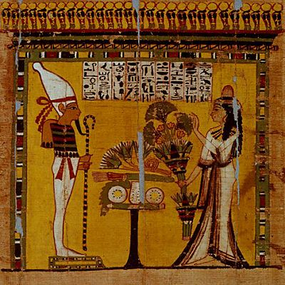
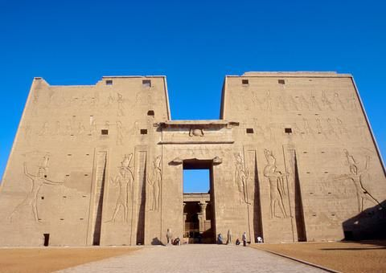
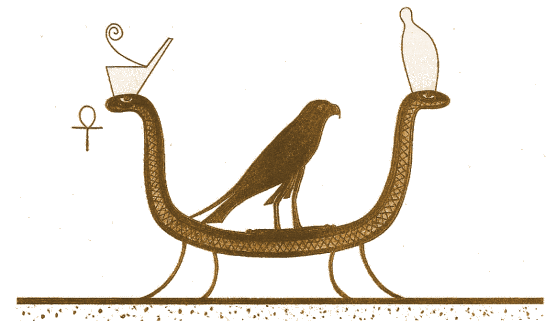
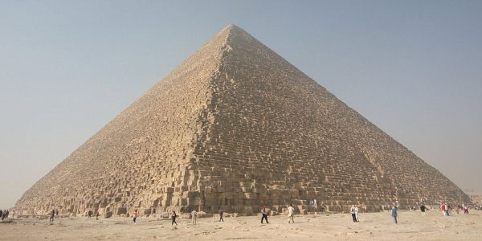
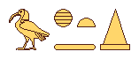
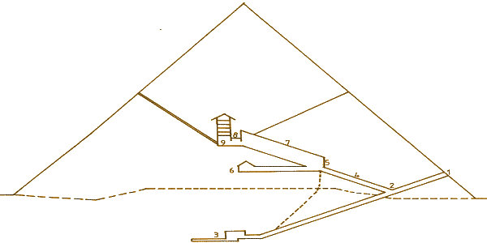
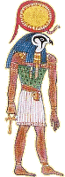

Английский оригинал этой страницы, изобилует фактическими ошибками и неточностями. По возможности, используйте другой ресурс, если вас интересует история древнего Египта. /Примечание редактора/.

Книга Мёртвых
Египтологи поспешно нарекли один из самых больших загробных папирусов Египта «Книгой мёртвых». На самом деле, точное название этих длинных свитков, покоившихся у ног мумии, - «Изречения выхода в свет». Египтяне полагали, что свет скрыт в сердце иероглифов. Считалось, что эти фразы исходят от самого божественного Тота (Thot). Оригиналы можно найти в крипте его храма, Гермополис Магна (Hermopolois Magna), на изящном блоке лазурита, служащем постаментом статуи этого бога знаний. Мы говорим здесь о свете в переносном значении, как о синониме силы, которая завязывает и развязывает узел жизни и смерти.
Исторически, тексты «Книги мёртвых» появляются в начале Нового царства, при XI династии. Первый вариант назывался «Фиванский реестр» по причине того, что он был написан в городе правителей, которые, после изгнания гикосов (Hykos), воссоединили два царства, и сделали Васет-Фивы (Waset-Thebes) столицей новой империи.
Как и тексты на пирамидах и саркофагах, другие великие
произведения, посвященные умершим, они не выстроены вокруг центральной
концепции или идеи. Мы можем найти в них мешанину
беспорядочных списков, упоминаний, похоронных текстов, волшебных заклинаний,
гимнов, духовных поучений и наставление о пути к прекрасному под названием
«Пути Аменти», которое описывает методы превращения,
необходимые для вступления в царство бессмертия.
Согласно египетской логике, каждый человек мог выбрать списки и разделы,
наиболее ему подходящие. Мы никогда не найдём двух совершенно одинаковых «Книг мёртвых»,
так как довольно большая часть их содержания всегда оставлялась на усмотрение
тех, кому были небезразличны эти магические заклинания.
Кроме того, существует и вторая версия этих текстов, «Саисский
реестр» (The Register of Saite). Который
предлагает нам примерно 165 глав. Эти записи были выполнены в Саисский» период примерно в 650 году во времена правления фараона
Псамметика. Конкретно этот свиток был написан Иуфанхом (Ioufankh); сейчас он
находится в Туринском музее. Длина разделов может колебаться от двух строк до
пятнадцати страниц, ни на одной из которых мы не найдём заголовка, который мог
бы объяснить, что там было записано. Однако глава CXLII озаглавлена «Книга
почестей блаженных, дабы был путь тех, кто выходит в свет, гладок, и форму они
приняли ту, что пожелают»; а глава CLIV – «Формула непозволения
телу истлеть».
Существуют многочисленные интерпретации смысла «Книги Мёртвых». Наиболее достоверная и наиболее приближенная к египетскому типу мышления, на наш взгляд, версия Поля Барге (Paul Barguet). Этот специалист египтолог перевёл на французский язык наиболее полную версию из 192 глав, датированную периодом Птолемеев (Ptolemaic). Первый перевод этой версии сделал Герман Лепсий (German Lepsius).
Для того, чтобы лучше понимать эти сложные записи, мы можем разделить их на четыре части
- Главы I - XVI: Выход в свет
- Главы XVII - LXIII: Возрождение
- Главы LXIV - CXXIX: Преображение
- Главы CXXX - CLXV: Триумф смерти
Выдержка:
« Я есмь змея Сата, чьи годы нескончаемы. Я ложусь мертва. Я рождаюсь ежедневно. Я змея Са-на-Та, обитатель крайних частей земли. Я ложусь мертва, я рождена. Я обновляюсь, я поновляю свою юность всякий день »

Первое нисхождение в гробницу Тутмоса III (Thotmes III)
- Час первый
Повсюду свет Анубиса; это и не день, и не ночь. Оранжевый шар старого Атума (Atoum) темнеет в небе запада. В этот скоротечный миг проход наполнен необычной атмосферой, и когда тьма окончательно окутывает плоть Афа (Af), солнце умирает и поднимается лёгкий ветер. В длинной лодке Мескетет (Mesketet) простирается тело. Девять кинокефалов и двенадцать богинь пришли приветствовать это заблудшее дитя на враждебном просторе победившей смерти. Его чёрное тело мумифицировано, а на голову надет солнечный венец. Начинается долгий путь вне времени между царством жизни и царством смерти. Слуги будущего бога молчаливо шествуют по берегам реки.
- Час второй
Они высаживаются на зелёные тучные земли священного города и некрополя Абидос (Necropolis of Abydos). Здесь бог когда-то в первый раз обманул смерть; этого бога зовут Осирис-Хентиментиу (Osiris-Khentimentiou), бог Запада. На небольших полях, тщательно орошаемых каналами, верные слуги мёртвых в тени пальмовых деревьев заканчивают свою божественную жатву. Путешествуя по этой идиллической стране, лодка и её таинственный штурман просыпаются, дабы очиститься среди растений и, таким образом, заново начать цикл времён года. Путешествие исполнено покоя. Изида (Isis) и Неофит (Neophytes), обратившиеся в кобр, также заняли место на лодке.
- Час третий
В тишине мы слышим поспешную поступь Массакристов (Massacrists) -духов, чья задача избавлять Чёрное солнце от врагов. Они обеспечивают лодке беспрепятственный проход, после чего начинают рыдать, глядя, как она удаляется по направлению к вотчине Осириса, способного одновременно принимать восемь различных форм (возможное напоминание об Оглоаде, гермополите Тота).
- Час четвёртый
Мы входим в царство Сокара, в засушливую пустыню, кишащую змеями, наделёнными лапами и крыльями. Эти создания господствуют над четырьмя стихиями, что делает путешествие опасным. Чтобы избавится от них, лодка сама превращается в змею и ползёт по песку. Она прорывается сквозь набрасывающихся на нее змей. Этот момент настолько драматичен, что даже Маат и жук Хепри (Khepri) оставляют своё царство звёзд для того, чтобы направить лодку навстречу судьбе.
- Час Пятый
Сокар (Sokkar) собирается
с силами в темноте перед «Божественными столпами», вратами, которые нужно
проходить без надежды на возвращение. Для Афа это
момент принятия главного решения: сдаться или продолжить путешествие по этой
мрачной неприветливой земле, где дюны горящего песка – лишь одна из преград,
которые нужно преодолеть. Семь лунных богов и богинь поднялись, чтобы провести
лодку и даровать ей надежду. Крылья жука Хепри зажужжали
во вновь установившейся тишине.
Сокар ничего не может сделать; его черты безмятежны
как у сфинкса. По каналу плывут головы без тел и тела без голов: это те, кто не
осмелился предстать перед сфинксом, чтобы оправдать свои деяния.
- Час шестой
Паломничество продолжается. После Абидод (Abydod) и Сахары (Sakhara), лодка
направляется к Бусирусу (Busirus),
ещё одному городу Осириса в самом сердце Дельты. У этих некрополей столько
порогов, что если кто-то решит сквозь них прорваться, нужно делать это без
оглядки, без страха, исполнившись твердой надеждой. В этих местах всё зыбко и
подвижно, и движение, время и пространство растворяются друг в друге. В
трещинах лежат змеи-людоеды, отогнать которых может лишь волшебство Тота. Когда бог Ибис (Ibis)
представляет двух Оуджат (Oudjats),
они воспаряют и перевоплощаются в глашатая грядущих перемен, Хепри.

- Час седьмой
Апопис (Apopis), самый
грозный враг, с которым предстоит столкнуться; и он становится всё ближе и
ближе. Это гигантская змея, плюющая кипящим ядом, который может обратить в пар
воды Ноуна (Noun). Лодку выбрасывает
на берег, где её беззащитный пассажир может стать добычей исчадий тьмы.
Чары волшебницы Изиды – единственное, что может противостоять этому дракону. Её
слова заставляют Апописа отступить и сплетаются
вокруг плывущего бога подобно кольцам длинной змеи, что впредь будет защищать Чёрное
солнце.
Наконец, двенадцать звезд (двенадцать ликов Гора) появляются на небе, чтобы вести паломника к вечности.
- Час восьмой
В горных склонах открываются пещеры, ведущие в гробницы девяти богов Гелиополиса. Они не шевелятся; они неподвижны; это мумии; они лежат в ожидании своего будущего; они – свидетели чуда. Они пробуждаются по прибытии лодки, однако уста их остаются запечатанными, так как слова не могут описать эту тайну. Лишь опыт путешествия позволяет им приблизиться.
- Час девятый
Ведомая двенадцатью звёздами, лодка пересекает плодородные владения Осириса, замечательные своей растительностью. Направляемые богом-мумией, девять садоводов путешественника на поля зелёного бога, одаривая его растениями и деревьями. Это начало полного обновления.
- Час десятый
Смена направления. Мы поворачиваем на юг к блистающему солнечному Гелипотису (Helipotis). Аф, очищенный огнём и водой, становится будущим Кепри (Kepri). Змея Мехен (Mehen) обвивается вокруг тела, находящегося в процессе перерождения. Над лодкой реет сокол. Кинокефалы Тота узнают бога и преподносят ему Оуджаты. Прозрачные воды расступились там, где мирно резвятся те, кто уже искупался в свете.
- Час одиннадцатый
Осталось последнее испытание: пересечь землю, изобилующую жаркими кострами, на которых сжигают всех врагов; ад для безбожников. На небе сияют звёзды созвездия черепахи, место перерождения. День клонится к закату. В свежести поднявшегося северного бриза, перед лодкой краснеет диск возвращающегося солнца.
- Час двенадцатый
Войдя через хвост гигантской змеи, Аф обратился в жука. Свет Аннубиса остается в стороне от заката. Двенадцать усердных слуг тянут Мадит, утреннюю лодку, на восток, в то время как бывшее тело Афа лежит распластанным на песчаной дюне. Это означает самый конец путешествия. Чёрное солнце избежало уничтожения, призвав на защиту всех последователей света. Начинается новое путешествие, новая одиссея к высшей точке. Тутмос воскрес. Сын Тота принадлежит семье негаснущих звёзд.

Множество людей бьется над загадкой самого известного древнеегипетского памятника: великой пирамиды Гизы, также известной, как пирамида Хеопса. Собственно говоря, это всего лишь одна из многочисленных гробниц, последнее пристанище правителей IV династии. Однако мечтатели всего мира яростно возражают против этой сухой формулировки. Они предлагают другие объяснения назначения этого гигантского монумента: астрологические часы, каменная книга для потомков; содержащая пророчества более ясные, нежели смутные «Века» Нострадамуса, и многое другое. Однако давайте вернёмся к предположению, что Великая пирамида –храм инициаций Гелиополисской системы. Памятник мог быть воздвигнут в тот период, когда поклонение солнцу доминировало в египетском мире – в начале древнего царства. Существуют доказательства, что он не мог быть просто гробницей, которой не нужны дополнительные внутренние приспособления, которых не было в других египетских пирамидах. Прежде чем войти в святилище, где осуществлялось великое таинство инициации, давайте ненадолго вернёмся к символизму пирамиды.
Этот священный памятник прежде всего выполнен в виде первобытной горы. Он символизирует восточный и западный горизонты. Каждое утро солнце появляется над восточным гребнем, и каждый вечер – уходит за западный. Священное место, которое, как мы полагаем, предназначалось для отдыха богов; обычно, оно украшалось пирамидианом – золотой змеёй с солнечным огнём; но ничего подобного не было в великой пирамиде. Пирамиду египтяне называли «Мер», что также означало канал для ирригации, инструмент для работника и глагол «любить». Это множество энергетических потоков, которые текут свободно и поддерживают жизнь.
У каждой пирамиды есть название, так как ее считали живым существом; телом, составленном из девяти элементов. Так, великую пирамиду называли «пирамидой, где солнце восходит и садится».

Если мы углубимся в символизм пирамиды, то узнаем, что она является частью солнечного астрала, как луч света, поглощающий свою тень. Так как пирамида – это гробница (исключение – лишь пирамида Хеопса), то тело покоится в луче света. Благодаря восходящей геометрии этого памятника и его подземному строению, можно предположить, что он задувался как настоящая лестница, по которой можно было подняться к небу, расчистить путь к звёздам, к «Нефер» (Nepher) (Совершенству).
Что касается великой пирамиды, мистики видят в ней «Ка», центральную точку вселенной, нейтральное место, где все силы находятся в равновесии, что является самой сутью познания тайны. На самом деле, памятник выполняет двойную функцию.
- Он делает бессмертным временное знание инициируемого.
- Является храмом солярной инициации.
Доказательства, содержащиеся в архитектуре памятника.
- Вход лежит к северу по направлению полярной звезды этого периода, Tuban of the Dragon. Для египтян эта звезда была источником жизненной силы.
- Размеры периметра основания 365, 24, 24, что точно соответствует году возведения пирамиды.
- Основание пирамиды представляет собой квадрат, сложенный из каменных кубов совершенной формы.
- Четыре угла, определяющие квадрат, соответствуют четырём сторонам света. Это уменьшенная модель мира. Следует заметить, что Великая Пирамида имеет идеальное расположение относительно сторон света.
- Треугольники пирамиды обозначают солнечное перекрещивание и свет Зодиака.
И вот мы на пороге великой пирамиды – храма инициации. План её помещений, приведённый ниже и пронумерованный от 1 до 9, позволит вам проследить за путешествием кандидата в этом совершенном храме. Напомним, что девять, число Гелиополиса, обозначает само сотворение. Эннеид и Абсолют. Путешествие по храму разделено на девять этапов; потолок царской усыпальницы сделан из девяти плит.

1В сумерках испытуемого приводили к подножию пирамиды, где он отвечал на ритуальные вопросы. После того, как он переступал порог, обратясь лицом на север, и спускался по крутому (28°) склону во тьму, он входил в царство Мертвых - Дуат (Douat).
2 Если его ответы были убедительны, он допускался на пересечение путей, где сидел глава испытуемых. Новая череда ритуальных вопросов – это суд, символизм которого более соответствовал символизму психостации. Испытуемый устремлялся к узкому проходу, ведущему в подземную усыпальницу, обитель Сокара. Этот коридор назывался «ложным ходом».
3 Обитель Сокара располагалась ровно по центру вдоль оси монумента. Лоно materia prima, оно служило каналом для распределения потоков энергии земли, которые засасывал дух. Испытание было очень непростым.
4 Если испытуемый справлялся с этим, и подтверждал, как и перед каждым последующим этапом, своё желание продолжать, то по ложному ходу он возвращался перекрёстку и начинал восхождение во тьму, где, то тут, то там подрагивали островки света. Восходящий вверх коридор, угол наклона которого составлял 28°, назывался «Путь истины во тьме». После регрессии, он демонстрирует эволюцию, подъём духа. Также это была территория Маат, по которой испытуемого вёл голос его сознания и интуиции.
5 Дойдя до второго перекрёстка, он должен был ещё раз сделать выбор и вновь ответить на ритуальные вопросы. Наука Тота-Гермеса не терпит предугадывания; она подразумевает долгое обучение и огромный опыт. Будущий последователь должен был доказать, что он усвоил семь принципов, правящих вселенной. И вот мы уже в горизонтальном коридоре, где ощущаем наступление равновесия. Коридор ведет в покои царицы.
6Покои царицы. Египтологи назвали так маленькое отдельное помещение, настоящее название которого – «покои Рестау»; место, где бог готовится к воскрешению. Это помещение не находится на главной оси строения. Если испытуемый отвергал королевскую инициацию, дальше он не шёл. Если же он решал продолжить, то он возвращался ко второму перекрёстку и продолжал восхождение к великой галерее.
7 Великая галерея. Её правильное название «Большая ступень»; как написано в «Книге Мёртвых», «Путь истины в свете» приводит к первому нисходящему коридору («Путь истины во тьме»). Широкий коридор вновь заставляет осуществить путешествие вниз, от солнца к месту воскрешения. Сосредоточенный на возвышенном пути в будущее, испытуемый должен порвать с суетным миром и стать «последователем Ра», примкнуть к культу Гора.
8 Последнее препятствие на его пути. В конце галереи тройной гранитный замок преграждал путь в царские покои. Это был тройной покров Изиды - место, где душа и тело должны были слиться воедино таким образом, чтобы испытуемый мог согнуться для того, чтобы пройти через низкие воротца.
9 И вот испытуемый оказывается в царских покоях, месте царской и солярной инициации. Именно там солнце является миру, в открытой могиле, в которой возлежит испытуемый. Он должен был ещё раз пережить опасное ночное путешествие к чёрному солнцу, перед тем, как отправиться к восточной горе, дабы переродиться в высшее существо, полностью посвящённому божественному.
‘Что было закрыто ныне открылось.
Лежавший в смерти освободился'
Затем испытуемый в сияющей галерее становится сыном Тота-Гермеса; его приветствуют братья, а с его новорождённых уст срываются следующие слова:
“Я в сердце Ра”

Источник : Рене Лашо, Magie et initiation en Egypte pharaonique.